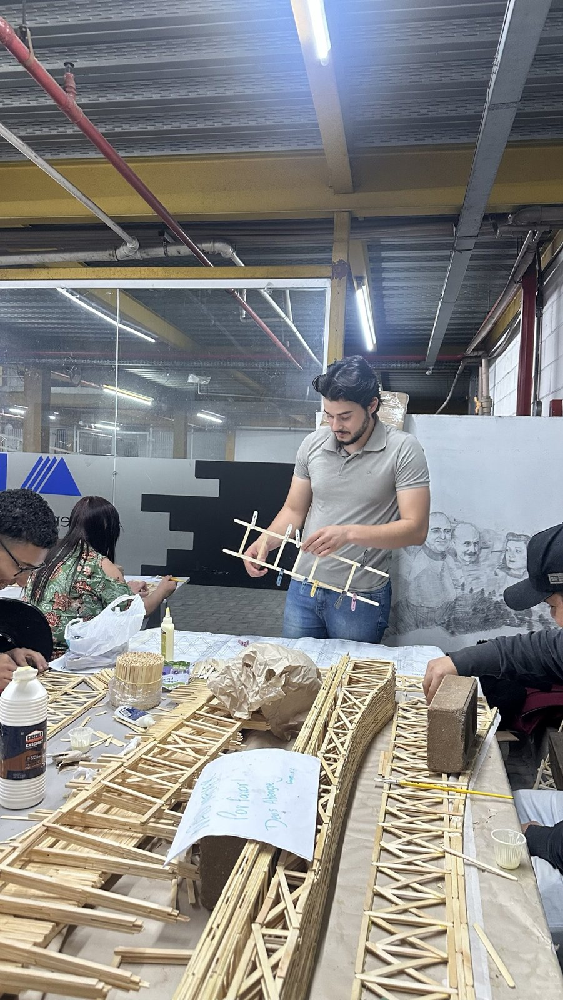
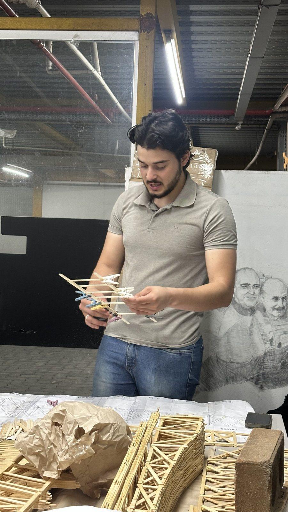
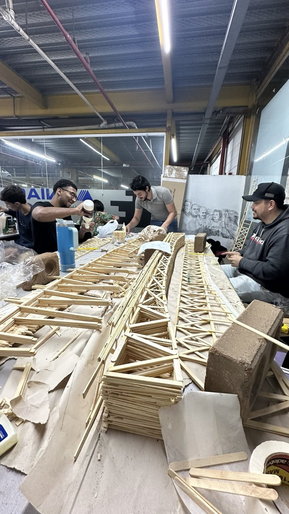
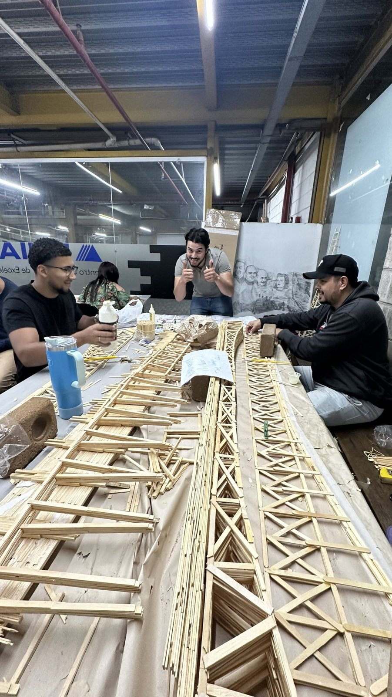
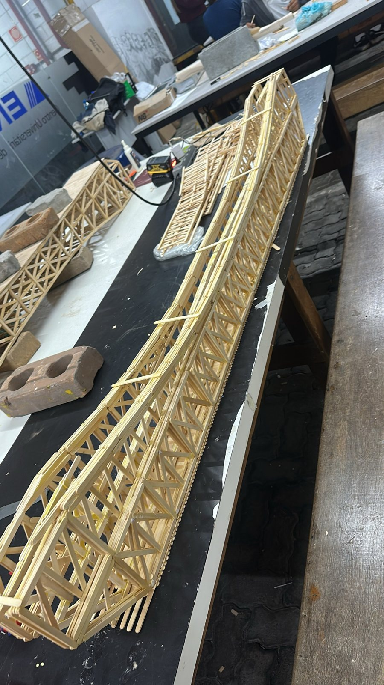
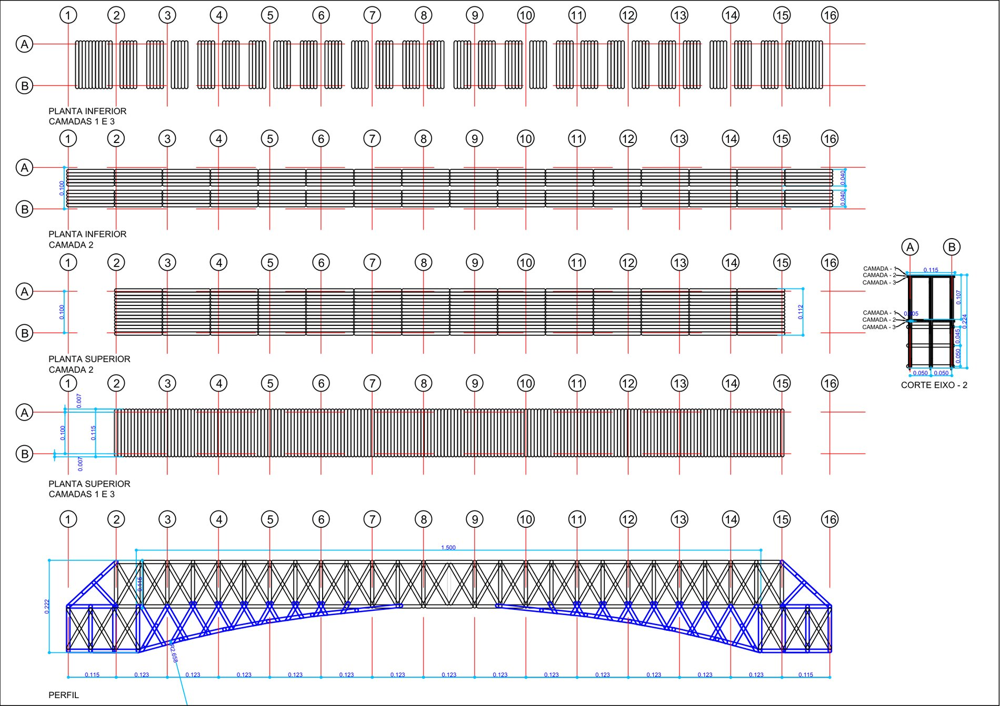
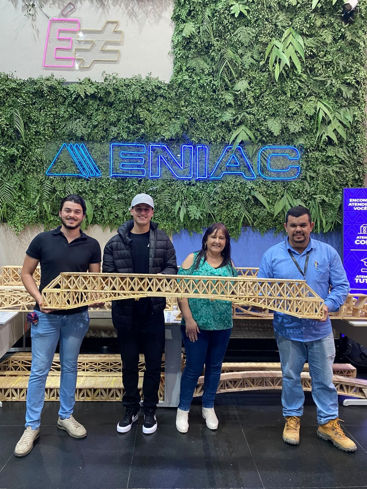
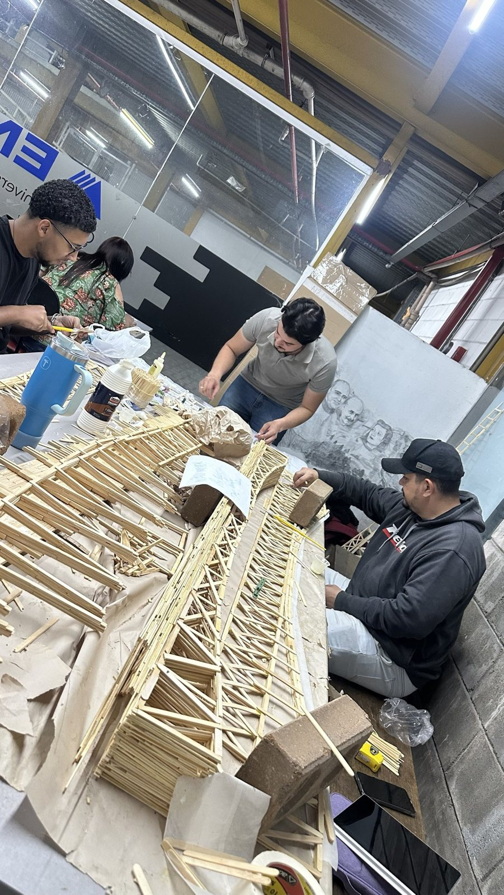

Ponte de palitos
Treliça laminada em palitos de sorvete e cola, com vão livre de 1,5 metro e superfície de carga no topo.

Em vídeo
A ponte pronta na bancada do laboratório.
O processo
Do painel colado à ponte montada.

1 · Painéis da treliça
Cada painel é montado com palitos colados, com pregadores de roupa segurando as juntas enquanto a cola seca.

2 · Conferência das peças
As peças são conferidas contra o desenho antes de entrar na ponte.

3 · Colagem das camadas
Os palitos são laminados em três camadas coladas entre si, para trabalhar como uma peça única.

4 · Trabalho em equipe
As treliças são montadas lado a lado na bancada, em grupo.

5 · Ponte montada
As duas faces da treliça ligadas, com o banzo inferior curvo e o tabuleiro no topo.
O projeto
As regras do professor e a solução do grupo.
- Vão
- 1,5 metro, com a ponte apoiada nas duas pontas.
- Material
- Palitos de madeira e qualquer cola. Sem limite de quantidade nem de peso da ponte.
- Carga
- Sem carga máxima definida. A superfície de carga fica no topo, para poder subir na ponte.
- Treliça
- Banzo superior reto, diagonais cruzadas em X em cada painel e banzo inferior curvo, com raio de 2,658 m.
- Camadas
- Três camadas de palitos laminados. As camadas 1 e 3 são iguais e a camada 2 tem outro arranjo, para o conjunto trabalhar como uma peça única.

Galeria
Toque numa foto para ampliar.


Arquivos
Para baixar ou imprimir.